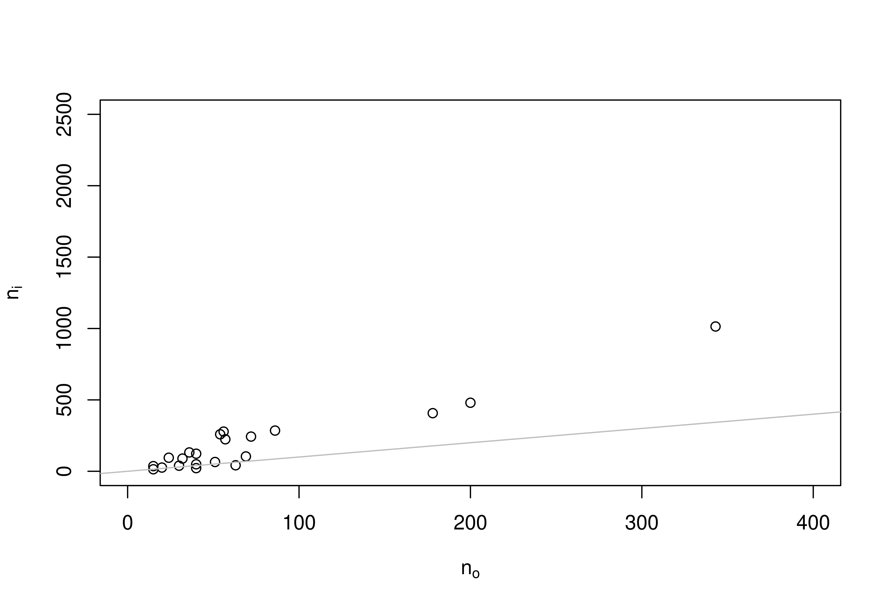
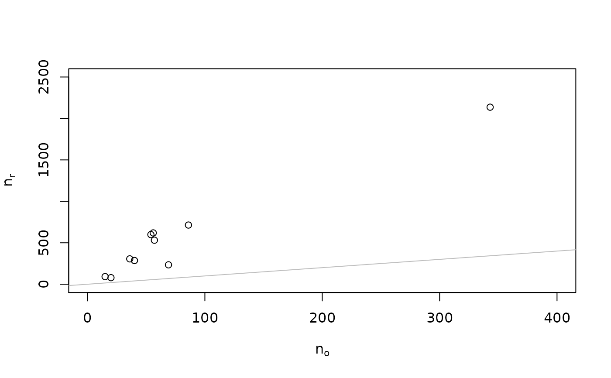

Data from the Social Sciences Replication Project (SSRP) including the details of the interim analysis. The variables are as follows:
studyStudy identifier, usually names of authors from original study
roEffect estimate of original study on correlation scale
riEffect estimate of replication study at the interim analysis on correlation scale
rrEffect estimate of replication study at the final analysis on correlation scale
fisoEffect estimate of original study transformed to Fisher-z scale
fisiEffect estimate of replication study at the interim analysis transformed to Fisher-z scale
fisrEffect estimate of replication study at the final analysis transformed to Fisher-z scale
se_fisoStandard error of Fisher-z transformed effect estimate of original study
se_fisiStandard error of Fisher-z transformed effect estimate of replication study at the interim analysis
se_fisrStandard error of Fisher-z transformed effect estimate of replication study at the final analysis
noSample size in original study
niSample size in replication study at the interim analysis
nrSample size in replication study at the final analysis
poTwo-sided p-value from significance test of effect estimate from original study
piTwo-sided p-value from significance test of effect estimate from replication study at the interim analysis
prTwo-sided p-value from significance test of effect estimate from replication study at the final analysis
n75Sample size calculated to have 90% power in replication study to detect 75% of the original effect size (expressed as the correlation coefficient r)
n50Sample size calculated to have 90% power in replication study to detect 50% of the original effect size (expressed as the correlation coefficient r)
data(SSRP)
A data frame with 21 rows and 18 variables
Two-sided p-values were calculated assuming normality of Fisher-z
transformed effect estimates.A two-stage procedure was used for the
replications. In stage 1, the authors had 90% power to detect 75% of
the original effect size at the 5% significance level in a two-sided
test. If the original result replicated in stage 1 (two-sided P-value <
0.05 and effect in the same direction as in the original study), the data
collection was stopped. If not, a second data collection was carried out
in stage 2 to have 90% power to detect 50% of the original effect size
for the first and the second data collections pooled. n75 and
n50 are the planned sample sizes calculated to reach 90% power in
stage 1 and 2, respectively. They sometimes differ from the sample sizes
that were actually collected (ni and nr, respectively). See
supplementary information of Camerer et al. (2018) for details.
Camerer, C. F., Dreber, A., Holzmeister, F., Ho, T.-H., Huber, J., Johannesson, M., ... Wu, H. (2018). Evaluating the replicability of social science experiments in Nature and Science between 2010 and 2015. Nature Human Behaviour, 2, 637-644. doi: 10.1038/s41562-018-0399-z
# plot of the sample sizes plot(ni ~ no, data = SSRP, ylim = c(0, 2500), xlim = c(0, 400), xlab = expression(n[o]), ylab = expression(n[i]))plot(nr ~ no, data = SSRP, ylim = c(0, 2500), xlim = c(0, 400), xlab = expression(n[o]), ylab = expression(n[r]))